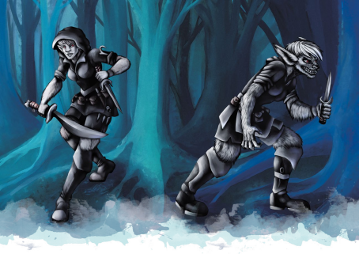

作为化兽者冒险者，你行于荒野和文明世界之间。你被原始的直觉，被狼或老鼠的低语所驱动。当你接纳那些声音的时候，你的形态就会变化。你是否将化形之后视作你原本的形态？或者你对化形抱有厌恶，害怕有朝一日你会迷失自我，被体内的野兽取而代之？
在创造一个化兽者角色时，你要考虑你的起源和居于你体内是什么样的野兽。是什么驱使你走上了冒险的道路？你会像对待族群一样对待自己的队伍伙伴，还是对你来说他们只是达成一个目的的工具？

化兽者起源Shifter Origins
化兽者在五国之中相对稀少；在布鲁兰，幻身灵的数量甚至都多于化兽者。科瓦雷大部分化兽者都居住于横亘在西北部、宽广的齐云森林之中。在过去四十年间，化兽者们开始自丛林深处走出，在埃鲁登原野的农田中定居下来，他们塑造了这个新生国家的文化。在齐云森林之外，大部分化兽者逃离了银焰大清洗的暴力和迫害，这也让他们散落在五国之中。虽然银焰大清洗的狂热早已平息，但仍然有许多人带着恐惧或怀疑的态度对待这些化兽者们。诸如：他们是兽化种，比起人类更像野兽。这些家伙十分暴力——因为他们无法控制自己的兽性。满月的时候难道他们不会变的更加危险吗？
作为一位化兽者角色，你并不必须与某个化兽者聚居地有所关联。就像其他人一样，你可以在五国之中长大，作为一名士兵或为一个龙纹家族服务。但如果你想要更深的联系，你可以考虑如下选项。
密林深处Deep Forest
齐云森林的化兽者们是居无定所的猎手和采集者，遵循着几千年来保护着他们的传统生活。他们中杰出的勇士都是德鲁伊，游侠或者野蛮人，他们与自己内在的野兽相协调。但他们对森林以外的世界几乎一无所知，对奇械工艺和或龙纹家族创造的诸多奇物也知之甚少。如果你来自这样一个部族，是什么驱使你离开了森林？你是否在遵从一位德鲁伊的预言？还是在追猎一个从林中逃脱的古代邪恶？你是被驱逐出了部族，还是仅仅因为好奇心而走出了森林？化外之民和隐士背景对这样一位角色来说都是合理的选择。
埃鲁登原野Eldeen Reaches
化兽者们在埃鲁登原野的崛起中扮演了重要的角色。他们加入了守望者的民兵，而许多人也都在农场中定居了下来。埃鲁登原野是一个新生的国家，它在终末战争期间从安黛尔中独立出来，而人们相当担心安黛尔可能会试图夺回该地区。作为一位埃鲁登化兽者，你是否是一位为这个国家而骄傲的居民？
城市族群Urban Pack
由于许多陌生人的恐惧和偏见，化兽者们常常在大城市中形成紧密的社区。萨恩的下层北边区中聚集了这座城市中的大部分化兽者；小时候，你可能会在桥上玩赫拉扎克，或是往殉道者法森的神社上撒尿。你是否和城中破败角落的某个家庭有所关联？你是否曾在终末战争中服役？如果如此，这是你效忠于某个国家的表现还是你只是做自己的工作？你是否固守着来自森林的古老传统，还是你认为狼奶奶这样的故事只是愚蠢的迷信？
内心之兽The Beats Within
你的化兽者亚种并不由基因决定——两种兽皮化兽者能够诞下迅捷亚种的孩子。年轻的化兽者通常不会有外表上的差别，但当你发现了内心的野兽时，它会决定你的亚种，并同时带来身体和心理上的变化。齐云森林的部族们相信这些野兽是图腾的精魂；月咏者德鲁伊会讲述狼奶奶和老鼠爷爷的故事，而化兽者猎人们则会以虎之血的名义发誓。
你内心的野兽由你的亚种所反映，它塑造了你的个性和外表。如果你的野兽是虎，你可能会带有一些猫科动物的特征，这会在你化形时尤为明显。然而，内心之兽最终是对你本我的反映；你可以把你的暴脾气归结于你的野猪特征，但它并非是像梦灵之于离梦人那样的独立力量。
月咏者德鲁伊们敬重许多精魂，但以下五种最常与内心的兽性联系起来：
l 熊体现了力量和谨慎；与野猪不同的是，熊通常会在采取鲁莽的行动之前停下脚步。和熊有关的通常是兽皮化兽者。
l 野猪有着强大的韧性，并以实诚和无谋著称；然而，它也被看做是鲁莽和过度热情的象征，容易做出莽撞的行为。野猪化兽者通常是兽皮亚种。
l 老鼠聪明而低调。由于缺乏肉体的力量，老鼠爷爷使用智慧来战胜敌人。鼠化兽者通常是迅捷亚种，但也能是猎食亚种。
l 虎化兽者以优雅和敏捷著称，他们被看做是天生的猎手。和那些被狼或老鼠所引导的兽化人相比，被虎所影响的兽化人往往是孤独的猎人。虎化兽者通常是迅捷或猎食亚种。
l 狼被认为是高傲和智慧的野兽，是群落的头领和德鲁伊秘密的守护者。有战斗倾向的狼化兽者通常是长牙亚种，而被狼奶奶所引导的德鲁伊们通常是猎食亚种。
第六章中列出了两个反映你与内心兽性联系的角色选择，包括进阶化形专长和超体宗武僧宗派。在创造一位化兽者角色时，请思考你内心的野兽天性和你与它的联系。如果你是一位具有狼特征的猎食化兽者，你是否会认为自己曾被狼奶奶所触碰？你会发扬你的本性，还是会试着忽视它？
化兽者和宗教Shifters and Religion
化兽者圣武士和化兽者牧师非常稀少。化兽者们天生和原始的力量具有联系，也更倾向于接受这些力量，而非东方的抽象宗教。虽然在所有埃鲁登德鲁伊教派之中都能找到化兽者的身影，但月咏者是一个与化兽者传统息息相关的教派；月咏者通常追随月亮结社或者牧人结社。月咏者们将图腾和内心之兽联系起来，如狼奶奶和熊表哥——但他们并不将这些精魂当做神灵。这些野兽们自内指导着化兽者们——他们本身并不会直接改变这个世界。
银焰大清洗在化兽者们心中留下挥之不去的伤口，让他们对五国那些有组织的宗教抱以痛苦和怀疑。然而，也有一些化兽者意识到大清洗是一场由人们而非银焰本身的失败导致的悲剧；数十年以来，已经有好几位化兽者英雄拥抱了银焰的信仰，并试图在他们的人民和银焰守护者之间架起一座桥梁。这还有很长的路要走——但你的角色可能是受到召唤来完成这件事的英雄。
在五国之中，有少数的化兽者抛弃了月咏者的传统，转而投身于天命诸神的信仰。巴力诺的猎犬教派中，其成员坚信化兽者被巴力诺选中之人，而他们的化形则是狩猎之神赐予他们的力量。其他化兽者则信仰荒野三面——阿拉瓦伊、巴力诺和吞噬。极少的化兽者转向信仰沃尔之血，将内在神性的观点和内心之兽结合起来。
然而，与寻求来自神灵的指引相反，化兽者们通常更专注于自己的内在力量和本能。许多生活在城市中的化兽者会积极地对牧师和圣武士们提出怀疑，尤其是对那些银焰的追随者们。
化兽者和兽化人Shifters and Lycanthropes
化兽者和兽化人的关联显而易见。两者都能变形为更加野性的形态。化兽者和熊、野猪、老鼠和狼都关系密切；而这些同时也是兽化人最常见的形态，这难道仅仅是巧合吗？然而，化兽者和兽化人之间依然有着天壤之别。你无法通过被咬一口而成为化兽者。化兽者能够完全控制住他们自己的天赋，而兽化人则与自己的变形能力相斗争。内心之兽能够塑造一位化兽者的性格，但绝不会压倒它。相较之下，兽化症会破坏受害者原本的人格，把最善良的影响化作嗜血的杀人犯。鼠人和狼人都是残暴的杀手...但狼奶奶从未鼓励野蛮的行径，而老鼠爷爷也不曾提倡过谋杀。而最重要的是：化兽者自己也能成为兽化人。兽化症并不存在于他们血脉之中，兽化症是一种诅咒，而它能像影响其他类人生物一样影响他们。
月咏者德鲁伊之间流传着一个五位兽化人勇士冒险进入齐云森林的故事。为了追猎一个可怕的邪恶，他们过于深入森林之中，而当他们捕捉到这邪恶之时，邪恶又转而将他们控制；这邪恶充盈了他们的内心，让他们转而回去捕食自己的朋友与家人。如果有人从他们的攻击中幸存下来，邪恶还会渗入伤口之中，毒害他们的心灵。他们，据德鲁伊们说，就是最初的兽化人。
银焰大清洗开始的时候，一股黑暗力量正在齐云森林中翻涌，增强了兽化症的力量。诅咒变得更加恶毒。在某种诅咒以外的黑暗力量的牵引下，受害者比以往更加迅速地转化为诅咒的牺牲品。在齐云森林中，化兽者部族与他们堕落的亲族作战。而在齐云森林之外，埃鲁登的农夫们则遭到狼群和野猪群的袭击。当圣堂武士们做出反应时，被杀死的野兽恢复了他们的本来面目，显出他们是化兽者。而消息很快传开：所有的化兽者都是兽化种，能够化身为野蛮的兽类，他们全都不可相信！与此同时，在化兽者部族中，斥候们则紧急报告着外国士兵犯下的暴行。事实上，双方的煽动者都是鼠人，他们希望确保这些可能的盟友反目成为死敌。这个计谋成功了。惊恐的圣堂武士和偏激的暴徒杀害了许多无辜的化兽者，时至今日，被称为纯净之焰的极端教派仍然宣称所有的化兽者都是黑暗的奴仆。
而事实上，兽化症是一种武器，它通过暴力传播，将受害者化作杀手。它的起源可能永远也不会为人所知。但月咏者的故事有其合理之处。兽化症和化兽者存在关联，因为最初的兽化人便是受到诅咒的化兽者。在银焰大清洗的狂潮背后可能还有其他的未知力量——而它可能会卷土重来。一个合乎逻辑的始作俑者是被称为腐化者迪恩的异变魔。有说法是迪恩通过扭曲幻身灵创造出了变形怪；而也可能是同样的技术自化兽者中创造出了兽化人。或者这也可能是一位魔君——恶魔时代的高等邪魔的杰作；一些文献提到了荒野之心，一位毁灭文明并以原始的残酷为食的魔君。最终则由DM选择这一答案是否会被揭露，如果会，真相又是如何。在于黄泉巨龙邪教战斗的过程中，你是否会直面被最初迪恩腐化的化兽者勇士们？或者砂主们可能正在释放荒野之心？
虽然化兽者和兽化人并不相同，但故事和刻板印象已经在人们心中牢牢扎根。每个人都称呼化兽者们为“兽化种”。而在齐云森林以外，有许多化兽者也相信自己是血脉稀释过后的兽化人。银焰大清洗和纯净之焰造成的伤痕永远也不会完全愈合。尽管存在着这些刻板影响，在齐云森林之中，化兽者们对邪恶的兽化人心怀恐惧，并将他们视为仇敌。他们的部族中有着专精于猎杀狼人的怪物猎手游侠。化兽者和兽化人彼此相似，但他们绝非同类——化兽者和人类一样容易受到兽化诅咒的感染。
|
边栏：化兽者与图腾 图腾武者野蛮人和牧人结社德鲁伊对于化兽者角色来说都是强力的选择。但你的图腾选择如何和你内心之兽联系在一起？如果你选择你是一位有着熊之精魂的兽皮化兽者，你是否能将狼作为你特性中的图腾精魂？你当然可以——即使作为图腾武士，你也并不一定仅仅与一种图腾野兽有所联系。你可以提出这样的主意：你能感受到与复数精魂的连接。在你的DM同意的情况下，你甚至可以长出与你的第二个精魂相关的肉体特征；你一直是一位如同熊一般的高大武士，但现在你在化形时能长出狼的耳朵和尖牙。 |